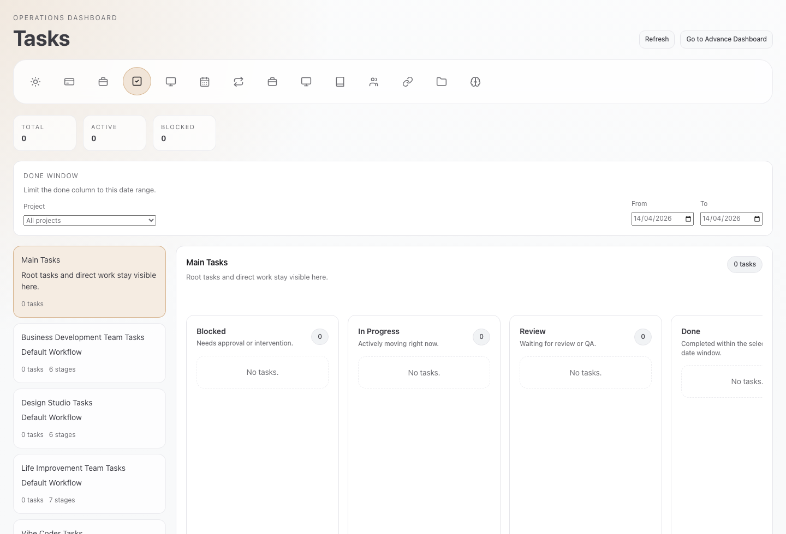
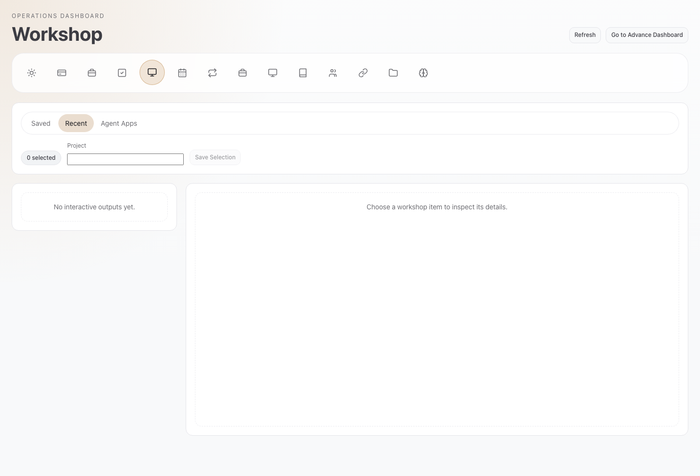
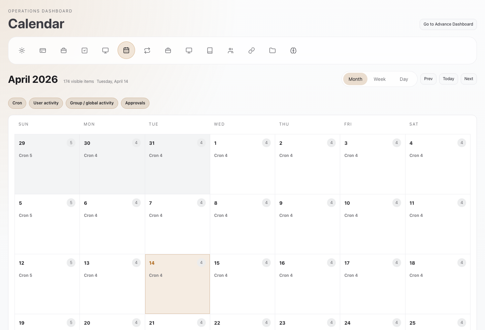
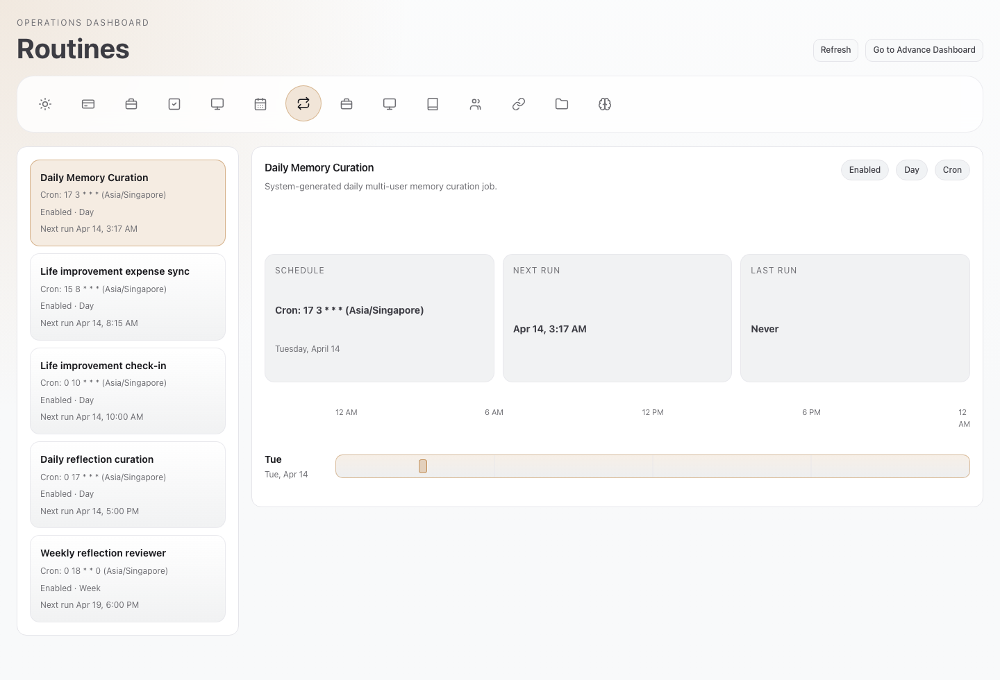
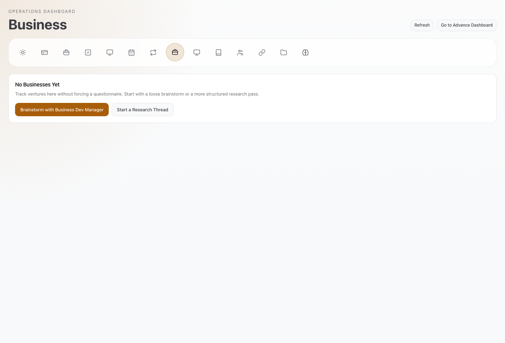
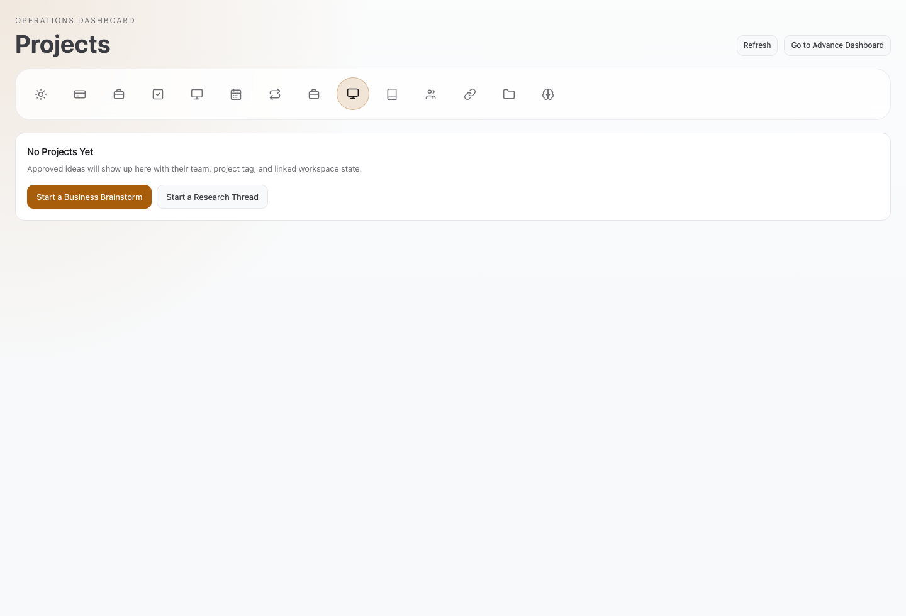
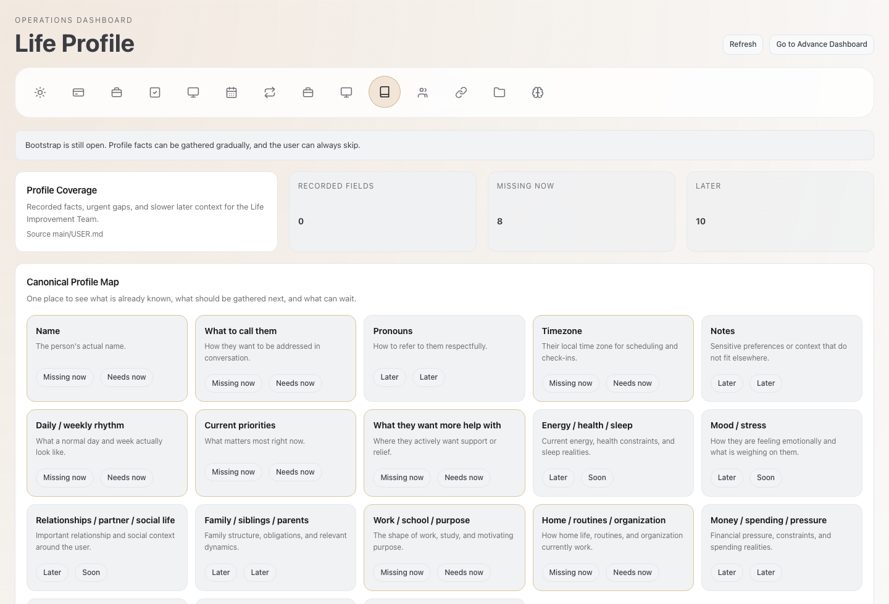
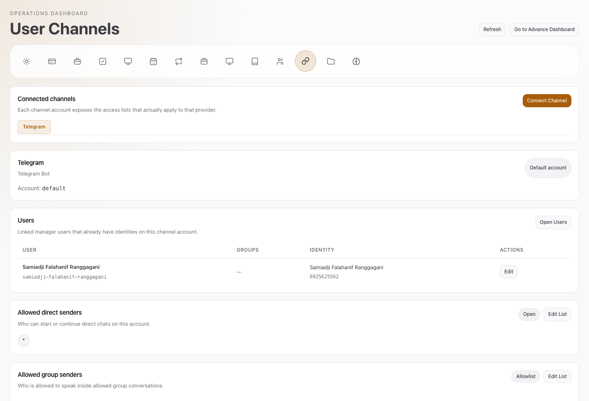
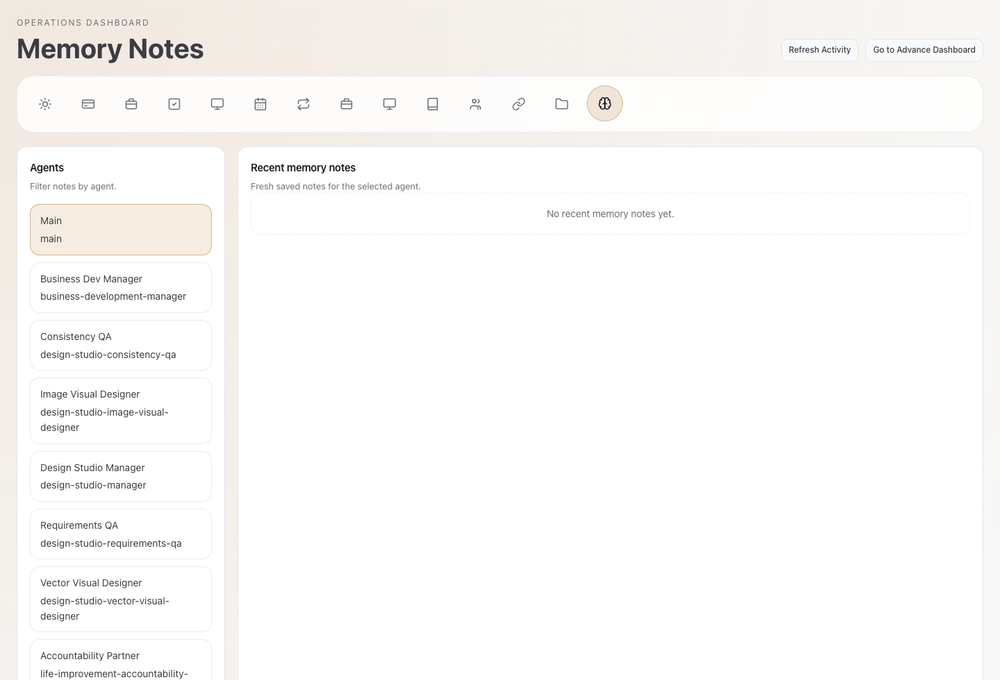

01 · Today
Start here.
Tasks, schedule, blockers, fresh memory.

Fourteen pages from Today to Memory Notes
Use this for quick orientation. Use the advanced control surface for raw settings, logs, and nodes.
Screens below are from the live local Maumau dashboard on this machine.
Daily picture
01 · Today
Tasks, schedule, blockers, fresh memory.
02 · Wallet
Usage, call time, audio, characters, receipts.

03 · MauOffice
A social pulse, not a spreadsheet pulse.

04 · Tasks
Kanban for sessions, delegates, blockers, project slices.

05 · Workshop
Recent outputs, saved artifacts, agent-app ideas.

06 · Calendar
Month, week, day for routines, cron, approvals, activity.

07 · Routines
Schedules, next runs, last runs, minus the cron noise.

Planning and growth
08 · Business
Private dossiers, gaps, questions, next research move.

09 · Projects
Blueprint state, workspace state, team wiring, artifacts.

10 · Life Profile
Recorded facts, missing gaps, later context.

Control and memory
11 · Teams
Managers, specialists, stages, links, review loops.

12 · User Channels
Channel setup, allowlists, group policy, mapped users.

13 · Agents
Edit memory files. Inspect runtime when needed.

14 · Memory Notes
Recent saved memory by agent.
